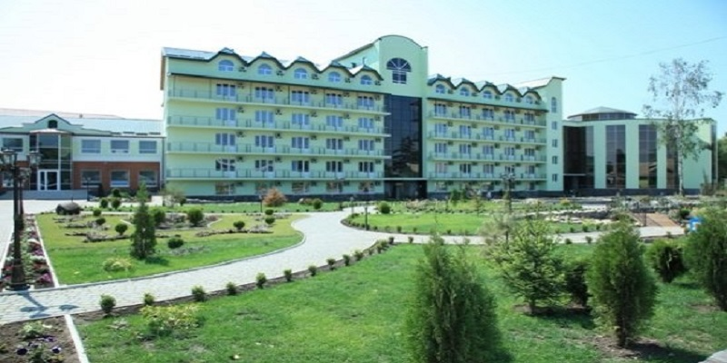

Місто Хмільник – єдиний радоновий курорт України
Санаторій Радон, м. Хмільник
Курорт Хмільник - бальнеологічна оздоровниця державного значення - відоме і популярне місце для лікування та відпочинку серед інших санаторіїв України та зарубіжжя. Основним лікувальним фактором є радонова вода, яка не має аналогів серед відомих мінеральних вод.
Сьогодні в намисті санаторіїв Хмільника, що у Вінницькій області, з'явився санаторій «Радон» - новітній сучасний лікувально-оздоровчий комплекс з першокласним сервісом, розташований на березі річки Південний Буг в історичному центрі міста на території парку державного значення.
Поряд з лікуванням і профілактикою захворювань ми пропонуємо Вам комплекс процедур з оздоровлення всього організму в цілому. Наше нове медичне обладнання дозволяє надати максимальний спектр послуг, які входять у вартість санаторно-курортної путівки. Застосування радону, як основного природного лікувального чинника на курорті Хмільник виправдано і підтверджено багаторічним досвідом інших санаторіїв Хмільника.
Загальні, камерні радонові ванни, підводне витягування хребта та гідрокінезотерапія в лікувальному басейні з радоновою водою, підводний душ-масаж - потужні засоби для реабілітації та лікування багатьох захворювань відповідно до медичних показань.
Готельний фонд складається з номерів різних категорій. Всі вони відрізняються оригінальним дизайнерським рішенням. Умови проживання задовольнять смак найвимогливіших гостей. У всіх номерах до ваших послуг санвузол з душовою кабіною (гаряча і холодна вода постійно), кондиціонер, телевізор LCD з кабельним телебаченням, телефон, холодильник, сейф, електрочайник, фен, безкоштовний доступ в інтернет (WI-FI). . У 6-поверховому спальному корпусі - ліфт, майже у всіх номерах - балкони.
Санаторій МЦР Залізничників - Хмільник
Загальна інформація про санаторії МЦР Залізничників Хмільник Санаторій Залізнічніків Укрзалізниця (офіційно - Мецічній Центр Реабілітації Залізнічніків Хмільник - МРЦЗ) - Це сучасна, комфортабельна оздоровниця на 196 місць, відкрита в серпні 2005 року після реконструкції та оновлення матеріально-технічної бази.
Розміщення
Санаторій Залізнічніків має 2 спальних корпуси, бювет мінеральних вод і лікувальну базу їдальню, басейн, бібліотеку, спортивний майданчик, кафе.
В санаторії Залізничників Хмільник - 3-разове дієтичне харчування в їдальні. Розрахунковий час: заїзд з 12:00, виїзд до 12:00